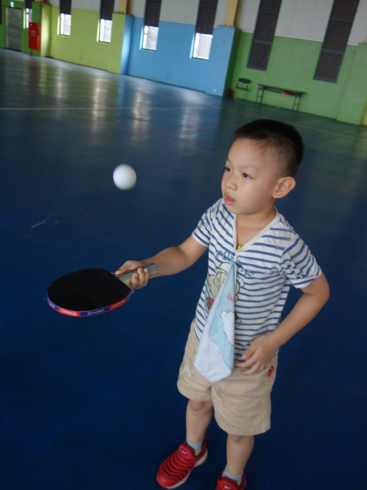
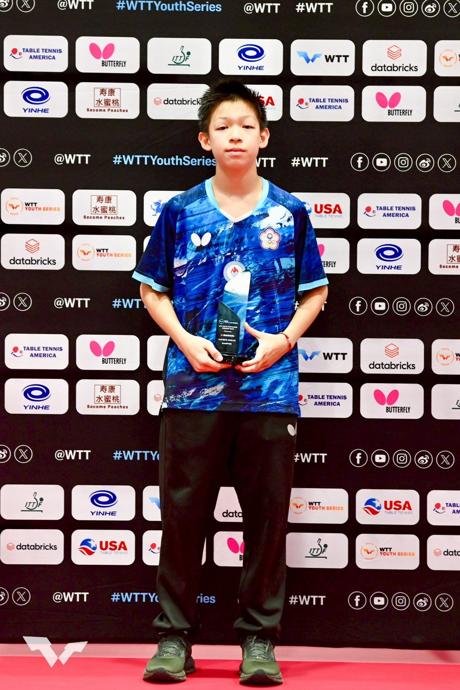

01我的故事
第一次拿起球拍的時候，沒有想過未來會走多遠，只是覺得球桌上的來回很有趣。球打過去、再打回來，那種專注在當下的感覺，讓人不知不覺就喜歡上了桌球。
後來，我開始走進訓練場。每天重複相同的動作、同樣的步伐、同樣的發球與接球。看起來很單調，但其實每一天都不一樣。因為今天比昨天更穩一點、動作更順一點、判斷更快一點，都是看得見的進步。
我也曾經輸球，也曾經懷疑自己。
有些比賽輸掉的那一刻，其實比想像中還安靜。沒有任何人能替你打那一分，也沒有任何理由可以讓結果改變。那時候才真正明白，桌球不是只靠喜歡就能走下去的運動，它需要的是願意一直再來一次的勇氣。
但也正是在那些輸球之後，我開始慢慢變強。
從小學一年級開始訓練，到現在已經累積七年以上的時間。這段時間裡，我從國內比賽開始，一步一步去面對更強的對手，也慢慢學會怎麼在壓力下不慌、在落後時不放棄。

